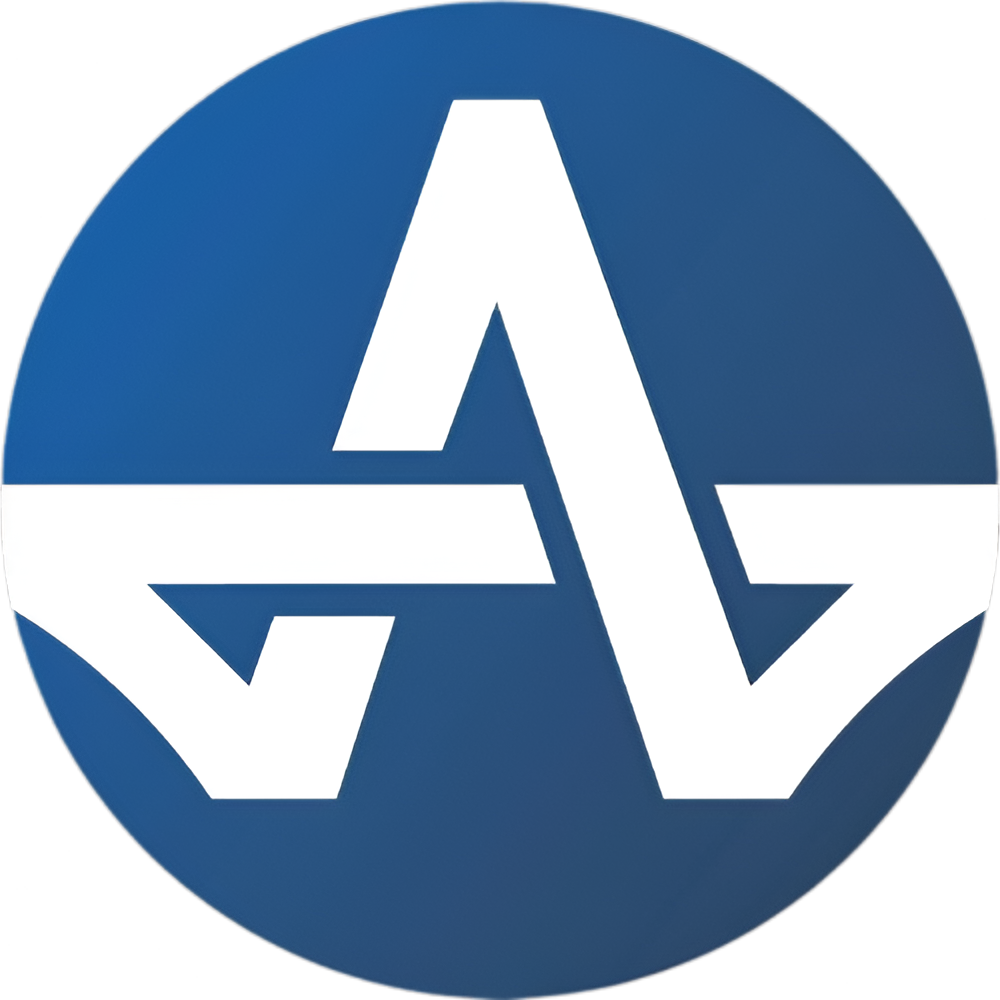

Rev. 01
Propuesta comercial 2026
Propuesta de Landing Page
Astorga Building Company
Planificación, estructura y alcance de una landing page profesional para fortalecer la presencia digital de la empresa y generar nuevas oportunidades comerciales.

Concepto 02
Hero con imagen
Experiencia inicial basada en una imagen principal como elemento visual destacado para comunicar la identidad de la empresa.

04 — Referencias
Referencias de páginas web
Inspiración y buenas prácticas. No se copia diseño, contenido ni identidad visual.